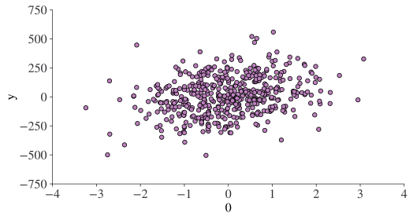
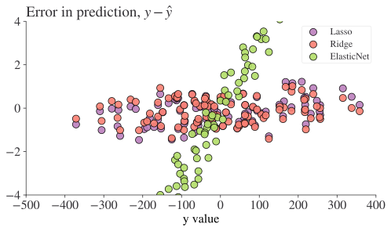
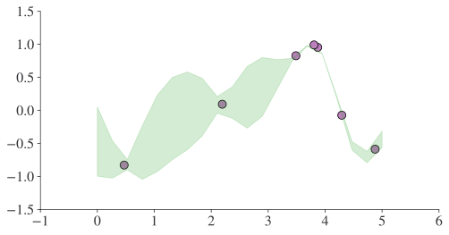
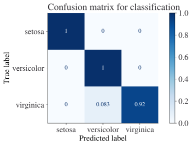
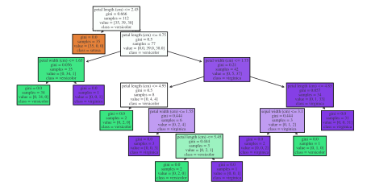

import matplotlib.pyplot as plt
import numpy as np
import pandas as pd
random_state = 42 # We'll use this throughout to make this page reproducible
prng = np.random.default_rng(random_state)Supervised Machine Learning
Introduction
In this chapter, we’re going to look at supervised machine learning, which we might just as easily call prediction. In maths, we are trying to find an $ () $ such that
y = \hat{y} + \varepsilon = \hat{f}(\mathbf{x}) + \varepsilon
for a set of variables \mathbf{x} and an outcome (continuous or discrete) y. It’s also possible for this to be a multi-valued problem, eg \mathbf{\hat{y}} = \hat{\mathbf{f}}(\mathbf{x}).
In the introduction to this section, we saw that there are a number of reasons why we might turn to machine learning. For supervised machine learning, the most important application is prediction.
Supervised machine learning is usually split into two types: regression, which covers prediction on a continuous interval, and classification, which is about predicting a class from a finite set of possible discrete classes.
In supervised machine learning, we will talk a lot about:
- in-sample data, the data used to train a model (the data on which a model learns)
- out-of-sample data, data held back to assess the performance of a model (data on which a model has not learned but that can be used for prediction)
The other key fact to know about supervised machine learning is that the typical way to assess a model is out-of-sample goodness-of-fit. Usually, this is captured by the mean squared error,
\text{MSE} = \frac{1}{N} \displaystyle\sum_{i=1}^N (y_i - \hat{y}_i)^2
Just applying this metric on in-sample metric would lead to a lot of overfitting as machine learning models are universal function approximators, and they are very good at it. Overfitting is a problem because it gives undue confidence that a model represents reality when, in truth, it would perform poorly on new data. Imagine you had only ever seen blue aquatic species that are fish; you might conclude that only fish can be blue and swim. But your model of the world would perform poorly in the real world because there are mammals that are blue and swim (not least Blue Whales!)
To ensure that we are not overfitting, there are typically two approaches, which can also be combined. The first is to use penalties for complexity in the model, which pushes the algorithms to find a succinct \hat{f}(\mathbf{x}). The second is to do tests of model performance on ‘held out’ or ‘out-of-sample’ data, ie data that is not used to train the model. These give a better reflection of reality. There are a whole host of ways that we can hoodwink ourselves that our model is performing better than it is, so it’s important to be on guard for ways that a machine learning model might pick-up clues in ways you might not expect. There’s a famous example in which an image recognition machine learning algorithm was identifying which images were from particular scanners as a proxy for which patients had cancer rather than learning to recognise the cancer itself—you can see how the errors can be serious. On the other hand, when used properly, machine learning is extremely powerful.
Although we’re trying to keep the theory to a minimum here, it would be remiss not to mention the bias-variance trade-off in machine learning models. Throwing darts at a dartboard helps illustrate the concepts: - bias is a measure of how close to the target your shots are - variance is how concentrated in a small area your shots are, regardless of where their average location is
if you think of each prediction of a machine learning model being a ‘shot’ then you can see how it applies. The following equation breaks down the mean-squared error of a prediction problem on {\displaystyle y=f(x)+\varepsilon }, where we wish to minimise {\displaystyle (y-{\hat {f}}(x))^{2}}:
{\displaystyle {\begin{aligned}{\text{MSE}}&=f^{2}+\sigma ^{2}-2f\operatorname {E} [{\hat {f}}]+\operatorname {Var} [{\hat {f}}]+\operatorname {E} [{\hat {f}}]^{2}\\&=(f-\operatorname {E} [{\hat {f}}])^{2}+\sigma ^{2}+\operatorname {Var} {\big [}{\hat {f}}{\big ]}\\[5pt]&=\operatorname {Bias} [{\hat {f}}]^{2}+\sigma ^{2}+\operatorname {Var} {\big [}{\hat {f}}{\big ]}\end{aligned}}}
There are three parts here; an irreducible error, \mathbb{E}[\varepsilon^2] = \sigma^2; a bias, \operatorname {Bias} [{\hat {f}}]^{2} = (f-\mathbb{E}[\hat{f}])^2; and finally a variance, \operatorname {Var} {\big [}{\hat {f}}{\big ]} = \mathbb{E}[X^2]-\mathbb{E}[X]^2.
Ideally, we want to just have the irreducible error. In practice, minimising the variance increases the bias and vice versa, and this is why people talk about the bias-variance trade-off. Overfitting is a great example: it decreases bias (makes predictions more accurate) but at the cost of having a more complex, varying set of guesses (higher variance). If you’re hungry for more, the wikipedia page on this is great.
Machine learning regression
The package we’ll be leaning on most heavily in this chapter is scikit-learn, which has excellent documentation. You can use scikit-learn to do regular regression but it’s much less intuitive for economists than the tools we saw in Regression, so we’re going to skip straight onto other algorithms.
Linear, penalised regression
Penalised regression introduces some kind of penalty to reduce the tendency to overfit, and is the first stop-off for machine learning. In the below, w represents weights and \alpha a hyper-parameter that the user must set (we’ll talk about how to set it later). The key algorithms are:
- Lasso. Think of this as ‘lassoing’ a small number of variables by shrinking the coefficients on other variables to zero. Gives sparse models. Solves \min_{w} { \frac{1}{2n_{\text{samples}}} ||X w - y||_2 ^ 2 + \alpha ||w||_1}
- Ridge. Think of this as similar to the lasso but instead pushing coefficients more naturally to small (but not zero) values. Solves \min_{w} || X w - y||_2^2 + \alpha ||w||_2^2
- ElasticNet. Think of this as combining the strengths of Lasso and Ridge; it’s essentially a combination of both. Solves \min_{w} { \frac{1}{2n_{\text{samples}}} ||X w - y||_2 ^ 2 + \alpha \rho ||w||_1 + \frac{\alpha(1-\rho)}{2} ||w||_2 ^ 2} where \rho controls how much like Lasso it is vs Ridge.
One of the advantages of penalised regression is that it does still produce coefficients, if you happen to need those. But it’s essentially a linear model, and comes with the pros and cons of those too.
Let’s now look at all of these in code!
The libraries we’ll be using are:
First we need some ground truth data. Let’s generate some. We can use the handy make_regression() function that comes with scikit-learn; note that this library is abbreviated to ‘sklearn’ in all import statements.
from sklearn.datasets import make_regression
X, y, coef = make_regression(
n_samples=500, n_features=6, noise=0.5, random_state=random_state, coef=True
)The first object, X, is an array with dimensions of (n_samples x n_features):
X.shape(500, 6)while the second is a vector with n_samples entries.
In practice, you’ll mostly be working with dataframes, so we’re going to pop these into a dataframe now:
reg_df = pd.DataFrame(X)
reg_df["y"] = y
reg_df.head()| 0 | 1 | 2 | 3 | 4 | 5 | y | |
|---|---|---|---|---|---|---|---|
| 0 | -0.753965 | 0.281191 | -0.062593 | -0.280675 | 0.758929 | 0.104201 | 43.220530 |
| 1 | 1.031845 | -0.439731 | 0.196555 | -1.485560 | -0.186872 | 1.446978 | -9.556226 |
| 2 | -0.600639 | 0.110923 | 0.375698 | -0.291694 | -0.544383 | -1.150994 | -62.911906 |
| 3 | 0.998311 | -0.322320 | 1.521316 | -0.431620 | 1.615376 | 1.217159 | 307.752538 |
| 4 | 0.338496 | 0.770865 | 1.143754 | -0.415288 | 0.235615 | -1.478586 | 167.728761 |
We can also take a look at the data; let’s do a quick chart of the first feature in X against y (remember there is more than one feature/regressor though!)
reg_df.plot.scatter(x=0, y="y", s=30);
Okay, let’s get onto some actual machine learning. As noted before, we need to split our sample into a test set and a training set. scikit-learn has a handy function for this, called train_test_split().
from sklearn.model_selection import train_test_split
train_df, test_df = train_test_split(reg_df, random_state=random_state, test_size=0.2)
train_df.head()| 0 | 1 | 2 | 3 | 4 | 5 | y | |
|---|---|---|---|---|---|---|---|
| 249 | -1.116524 | 1.533728 | -1.707358 | 1.235812 | -0.629263 | -0.535801 | -85.096380 |
| 433 | -2.123896 | -0.808298 | -0.599393 | -0.525755 | 2.189803 | -0.839722 | -89.842998 |
| 19 | 1.117399 | -0.548287 | 0.501783 | 1.448499 | -0.155898 | 0.160018 | 85.391162 |
| 322 | 0.484733 | 1.281016 | 0.852774 | -0.846357 | -0.447322 | 0.067856 | 165.681418 |
| 332 | -0.019260 | -0.191028 | 0.784604 | -0.262891 | -2.562334 | 2.412615 | -99.893249 |
We used test_size = 0.2, which uses 20% of the data as the test set, but we could have also passed an explicit number. 20% is not untypical, depending on the overall size of your data.
Let’s now pop these data into our algorithms. We’re going to go through step-by-step to make clear what’s happening first, but later we’ll show you a way to efficiently run lots of models at once. We’ll start with Lasso.
from sklearn import linear_model
reg_lasso = linear_model.Lasso(alpha=0.1, random_state=random_state)
reg_lasso.fit(
train_df.iloc[:, :-1], train_df["y"]
) # note that all but final column is passed as XLasso(alpha=0.1, random_state=42)In a Jupyter environment, please rerun this cell to show the HTML representation or trust the notebook.
On GitHub, the HTML representation is unable to render, please try loading this page with nbviewer.org.
Parameters
| alpha | 0.1 | |
| fit_intercept | True | |
| precompute | False | |
| copy_X | True | |
| max_iter | 1000 | |
| tol | 0.0001 | |
| warm_start | False | |
| positive | False | |
| random_state | 42 | |
| selection | 'cyclic' |
Well it doesn’t look like much happened! But, au contraire, the magic has been happening. reg_lasso is an instance of the Lasso class that has been fit to the data and now carries with it coefficients that we can look at.
reg_lasso.coef_array([43.04444381, 98.23909293, 96.83389336, 34.68124549, 81.74516152,
25.85780195])Remember that, in Python, everything is an object and objects can have state. An instance of a Lasso object can acquire the ‘state’ of having been fit to some data, and then it carries its fitted state with it.
With these linear models, we’ll be able to compare coefficients to the known solutions to our made-up data—but bear in mind that i) the mean square error is the metric of success that we’re really interested in; and ii) other machine learning algorithms will not produce coefficients.
Let’s now run the other two models in a similar fashion:
# ridge
reg_ridge = linear_model.Ridge(alpha=0.1, random_state=random_state)
reg_ridge.fit(train_df.iloc[:, :-1], train_df["y"])Ridge(alpha=0.1, random_state=42)In a Jupyter environment, please rerun this cell to show the HTML representation or trust the notebook.
On GitHub, the HTML representation is unable to render, please try loading this page with nbviewer.org.
Parameters
| alpha | 0.1 | |
| fit_intercept | True | |
| copy_X | True | |
| max_iter | None | |
| tol | 0.0001 | |
| solver | 'auto' | |
| positive | False | |
| random_state | 42 |
# elastic net w/ 50:50 split between ridge and lasso
reg_elast = linear_model.ElasticNet(
alpha=0.1, l1_ratio=0.7, random_state=random_state, fit_intercept=False
)
reg_elast.fit(train_df.iloc[:, :-1], train_df["y"])ElasticNet(alpha=0.1, fit_intercept=False, l1_ratio=0.7, random_state=42)In a Jupyter environment, please rerun this cell to show the HTML representation or trust the notebook.
On GitHub, the HTML representation is unable to render, please try loading this page with nbviewer.org.
Parameters
| alpha | 0.1 | |
| l1_ratio | 0.7 | |
| fit_intercept | False | |
| precompute | False | |
| max_iter | 1000 | |
| copy_X | True | |
| tol | 0.0001 | |
| warm_start | False | |
| positive | False | |
| random_state | 42 | |
| selection | 'cyclic' |
Now we can compute MSEs for all of these. Remember that we need to do this out-of-sample, but we’ll look at both in-sample and out-of-sample so you can see the difference. We’ll pop them into a dataframe too.
To get out of sample predictions, we use the predict() method on the fitted model, passing new data (but only X) to it. Here’s what that looks like on a few rows of data
reg_lasso.predict(test_df.iloc[:5, :-1])array([ 163.08609994, -169.85887763, -66.33847724, -35.00337041,
-262.31589457])To compute the mean squared error, we use the scitkit-learn built-in function and plug in the true y and the predicted y, both using the test data so that the MSE is out-of-sample:
from sklearn.metrics import mean_squared_error
mean_squared_error(y_true=test_df["y"], y_pred=reg_lasso.predict(test_df.iloc[:, :-1]))0.39654453453700617That’s great, but it’s only one model! In many machine learning applications, you’ll be thinking about multiple models at once. But the great thing about code is that everything can be scaled up. So let’s populate a dataframe with all of the results for both in-sample and out-of-sample tests.
To get the names of each of the models we’re working with programmatically, we’re going to use a really good Python trick: we’re going to make use of a dunder method, which is all methods that look like this: __methodname__. Dunder is short for double underscore. Methods are the operations you can do on objects of classes in Python. For example, reg_lasso is an object of class Lasso. Dunder methods are methods that many classes have by default. A common one is .__name__ which returns the name of an object. In this case, we don’t have __name__, but we do have __class__, so we can use that:
reg_lasso.__class__sklearn.linear_model._coordinate_descent.LassoTo get just the end bit (the rest is too long), we’ll convert this to a string and strip out the bits we don’t want, like so:
str(reg_lasso.__class__).strip(">'").split(".")[-1]'Lasso'
TipExercise
Why does the above need .strip(">'")?
We’ll put this into a function so we can re-use it easily:
def get_nice_name_algo(object_in):
return str(object_in.__class__).strip(">'").split(".")[-1]Okay now we have a convenient way to name each column of MSE results:
from sklearn.metrics import mean_squared_error
models = [reg_lasso, reg_ridge, reg_elast]
model_names = [get_nice_name_algo(model) for model in models]
mse_df = pd.DataFrame(index=["out-of-sample", "in-sample"], columns=model_names)
for model, name in zip(models, model_names):
mse_df.loc["out-of-sample", name] = mean_squared_error(
y_true=test_df["y"], y_pred=model.predict(test_df.iloc[:, :-1])
)
mse_df.head()| Lasso | Ridge | ElasticNet | |
|---|---|---|---|
| out-of-sample | 0.396545 | 0.324896 | 27.005172 |
| in-sample | NaN | NaN | NaN |
We can add in the in-sample data:
for model, name in zip(models, model_names):
mse_df.loc["in-sample", name] = mean_squared_error(
y_true=train_df["y"], y_pred=model.predict(train_df.iloc[:, :-1])
)
mse_df/Users/aet/Documents/git_projects/coding-for-economists/.venv/lib/python3.10/site-packages/sklearn/linear_model/_base.py:280: RuntimeWarning: divide by zero encountered in matmul
return X @ coef_ + self.intercept_
/Users/aet/Documents/git_projects/coding-for-economists/.venv/lib/python3.10/site-packages/sklearn/linear_model/_base.py:280: RuntimeWarning: overflow encountered in matmul
return X @ coef_ + self.intercept_
/Users/aet/Documents/git_projects/coding-for-economists/.venv/lib/python3.10/site-packages/sklearn/linear_model/_base.py:280: RuntimeWarning: invalid value encountered in matmul
return X @ coef_ + self.intercept_
/Users/aet/Documents/git_projects/coding-for-economists/.venv/lib/python3.10/site-packages/sklearn/linear_model/_base.py:280: RuntimeWarning: divide by zero encountered in matmul
return X @ coef_ + self.intercept_
/Users/aet/Documents/git_projects/coding-for-economists/.venv/lib/python3.10/site-packages/sklearn/linear_model/_base.py:280: RuntimeWarning: overflow encountered in matmul
return X @ coef_ + self.intercept_
/Users/aet/Documents/git_projects/coding-for-economists/.venv/lib/python3.10/site-packages/sklearn/linear_model/_base.py:280: RuntimeWarning: invalid value encountered in matmul
return X @ coef_ + self.intercept_
/Users/aet/Documents/git_projects/coding-for-economists/.venv/lib/python3.10/site-packages/sklearn/linear_model/_base.py:280: RuntimeWarning: divide by zero encountered in matmul
return X @ coef_ + self.intercept_
/Users/aet/Documents/git_projects/coding-for-economists/.venv/lib/python3.10/site-packages/sklearn/linear_model/_base.py:280: RuntimeWarning: overflow encountered in matmul
return X @ coef_ + self.intercept_
/Users/aet/Documents/git_projects/coding-for-economists/.venv/lib/python3.10/site-packages/sklearn/linear_model/_base.py:280: RuntimeWarning: invalid value encountered in matmul
return X @ coef_ + self.intercept_| Lasso | Ridge | ElasticNet | |
|---|---|---|---|
| out-of-sample | 0.396545 | 0.324896 | 27.005172 |
| in-sample | 0.317716 | 0.256303 | 28.493246 |
Typically, we expect the in-sample MSE to be lower than the MSE for the out-of-sample data, though clearly something very strange is going on with the Elastic Net—we’ll return to this later but for now note that we just used fairly random settings of hyper-parameters (alpha and l1_ratio) but we need to be a bit more clever with setting them!
As a treat, let’s look at the predicted vs actual values for the three models on the test data
results_df = pd.DataFrame()
for model, name in zip(models, model_names):
results_df[name] = model.predict(test_df.iloc[:, :-1])
results_df["truth"] = test_df["y"].values
# NB: .values important in line above as test_df has a different index
# that will try and align with index on results_df. .values returns only the
# numbers with no indexing.fig, ax = plt.subplots()
for column in results_df.columns[:-1]:
ax.scatter(
results_df["truth"],
results_df["truth"] - results_df[column],
alpha=0.9,
label=column,
)
ax.legend()
ax.set_ylim(-4, 4)
ax.set_xlabel("y value")
ax.set_title(r"Error in prediction, $y - \hat{y}$")
plt.show()
Non-linear regression
There are lots of methods we could look at in this section, but we’re going to stick to the absolute classics.
Support Vector Machines
Support Vector Machine algorithms do a trick where they try to convert the space of data that is assumed to be non-linear into a space that is linearly separable. This image, from Wikipedia, gives the sense of this:

The way that they convert the underlying space depends on what basis kernel you use, and there are several available including options like linear and radial (rbf), which is the default. They can be used for regression and classification. You should be aware, however, that they are not scale invariant, so we highly recommended that you scale your data (something that we’ll talk more about in due course).
Let’s see how an SVM does on the data we already generated—rather than the default radial basis function, we’ll use a linear one as we created linear data in the first place. The C= keyword argument controls the regularisation (inverse proportional).
from sklearn.svm import SVR
reg_svr = SVR(kernel="linear", C=10)
reg_svr.fit(train_df.iloc[:, :-1], train_df["y"])
mean_squared_error(y_true=test_df["y"], y_pred=reg_svr.predict(test_df.iloc[:, :-1]))0.3295197445841393Without much work, we’ve already gotten close to the best estimate from our previous set of linear models. SVR doesn’t scale well to very large datasets, but is incredibly powerful.
Gaussian Process Regression
Gaussian processes are a big, complex topic that we don’t have time to go into here! Their main strength as a universal function approximator is that they are able to give an estimate of their own uncertainty of prediction (unsurprisingly, they use Bayes’ rule under the hood). Another way of putting this is that ‘Gaussian processes know what they don’t know’, and that can be useful (particularly in policy). The downside is that Gaussian processes are, like Bayesian approaches generally, computationally expensive. Let’s see how one does on our (mostly linear) problem.
We’ll use an off the shelf kernel from an example in the scikit-learn documentation on using Gaussian Process Regression, but you should always think about what kernel might suit your problem.
from sklearn.gaussian_process import GaussianProcessRegressor
from sklearn.gaussian_process.kernels import ConstantKernel, DotProduct
kernel = ConstantKernel(0.1, (0.01, 10.0)) * (
DotProduct(sigma_0=1.0, sigma_0_bounds=(0.1, 10.0)) ** 2
)
reg_gauss = GaussianProcessRegressor(random_state=random_state, kernel=kernel)
reg_gauss.fit(train_df.iloc[:, :-1], train_df["y"])
mean_predictions_gpr, std_predictions_gpr = reg_gauss.predict(
test_df.iloc[:, :-1],
return_std=True,
)
mean_squared_error(y_true=test_df["y"], y_pred=mean_predictions_gpr)/Users/aet/Documents/git_projects/coding-for-economists/.venv/lib/python3.10/site-packages/sklearn/gaussian_process/_gpr.py:444: RuntimeWarning: divide by zero encountered in matmul
y_mean = K_trans @ self.alpha_
/Users/aet/Documents/git_projects/coding-for-economists/.venv/lib/python3.10/site-packages/sklearn/gaussian_process/_gpr.py:444: RuntimeWarning: overflow encountered in matmul
y_mean = K_trans @ self.alpha_
/Users/aet/Documents/git_projects/coding-for-economists/.venv/lib/python3.10/site-packages/sklearn/gaussian_process/_gpr.py:444: RuntimeWarning: invalid value encountered in matmul
y_mean = K_trans @ self.alpha_0.34056363471922163As there is a posterior after doing GPR, it would be remiss not to look at it. For the high-dimensional problem we’ve chosen, it cannot be easily visualised, so we’ll create a simple 1D problem, fit it, and look at that:
from sklearn.gaussian_process.kernels import RBF
X_gpr_1d = prng.uniform(0, 5, 7).reshape(-1, 1)
y_gpr_1d = np.sin((X_gpr_1d[:, 0] - 2.5) ** 2)
kernel_gpr_1d = 1.0 * RBF(length_scale=1.0, length_scale_bounds=(1e-1, 10.0))
gpr_1d = GaussianProcessRegressor(random_state=random_state, kernel=kernel_gpr_1d)
gpr_1d.fit(X_gpr_1d, y_gpr_1d)
x_gpr_grid = np.linspace(0, 5, 20)
X_gpr_grid = x_gpr_grid.reshape(-1, 1)
y_mean_gpr, y_std_gpr = gpr_1d.predict(X_gpr_grid, return_std=True)
fig, ax = plt.subplots()
ax.scatter(X_gpr_1d, y_gpr_1d)
ax.fill_between(
x_gpr_grid,
y_mean_gpr - y_std_gpr,
y_mean_gpr + y_std_gpr,
color="tab:green",
alpha=0.2,
)
plt.show()
Other Regression Algorithms
There are a couple of other non-linear algorithms you might think of using for high-dimensional regression. They’re really much better suited to classification, but we mention them here for completeness. They are:
- the K nearest neighbours regression, imported via
from sklearn.neighbors import KNeighborsRegressor. This algorithm is what happens when good neighbours become good friends, at least to econometricians. In the case of regression, this is basically local interpolation. - decision tree regression, imported via
from sklearn import tree.DecisionTreeRegressor. We’ll see more of decision trees in the classification section. - neural nets. These are a whole class of powerful agorithms in themselves! They are available in scikit-learn as
sklearn.neural_network.MLPRegressorbut, for any advanced work using neural nets, you should consider using the pytorch package instead.
Classification
Classification is the art of predicting categories rather than continuous numbers. Many of the algorithms we saw in the regression section above can also be adapted for classification problems—for example there’s a support vector classifier in scikit-learn. You can find a full list of algorithms and whether they support classification or not here.
The main difference with classification problems is how the scoring is undertaken: rather than a continuous score, it relies on counting the number of correctly predicted values as a ratio. You can read more about metrics for classification here.
It’s probably easiest to show a simple example. We’ll use the Iris dataset and we’ll be trying to predict what species a flower is based on some other features.
from sklearn import datasets, svm
from sklearn.metrics import ConfusionMatrixDisplay, classification_report
from sklearn.model_selection import train_test_split
iris = datasets.load_iris()
X_iris = iris.data
y_iris = iris.target
class_names = iris.target_names
# Split the data into a training set and a test set
X_train_i, X_test_i, y_train_i, y_test_i = train_test_split(
X_iris, y_iris, random_state=random_state
)
# Run classifier, using a model that is too regularized (C too low) to see
# the impact on the results
classifier = svm.SVC(kernel="linear", C=0.0135).fit(X_train_i, y_train_i)
disp = ConfusionMatrixDisplay.from_estimator(
classifier,
X_test_i,
y_test_i,
display_labels=class_names,
cmap=plt.cm.Blues,
normalize="true",
)
disp.ax_.set_title("Confusion matrix for classification")
plt.show()
We can see from this confusion matrix that the diagonal has the ratios of labels that were correctly predicted (true positives) and off-diagonals are labels that were mispredicted.
There are a large range of potential metrics for classification problems and which will be most appropriate in your situation will depend on the context, and in particular whether you have very imbalanced classes or you care more about different types of error. You can get some of the most popular metrics from the classification_report() function.
print(
classification_report(
y_test_i, classifier.predict(X_test_i), target_names=class_names
)
) precision recall f1-score support
setosa 1.00 1.00 1.00 15
versicolor 0.92 1.00 0.96 11
virginica 1.00 0.92 0.96 12
accuracy 0.97 38
macro avg 0.97 0.97 0.97 38
weighted avg 0.98 0.97 0.97 38
Just because it is so ubiquitous, it seems worth showing another example using a popular classification algorithm, the decision tree classifier. Decision trees are well-liked partly because, in advanced forms, they are very powerful but partly because, in simple forms, they’re very interpretable—as we are about to see:
from sklearn import tree
clf = tree.DecisionTreeClassifier()
clf = clf.fit(X_train_i, y_train_i)
tree.plot_tree(
clf, class_names=list(class_names), filled=True, feature_names=iris.feature_names
);
This has been a very quick introduction to classification, but hopefully you will take away that it’s not so dissimilar from regression, you must be careful with the metrics of success you use depending on your problem, and that scikit-learn has many powerful options for you.